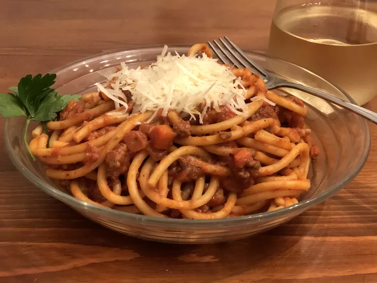

Spaghetti Bolognese

Spaghetti Bolognese
Description
Spaghetti Bolognese is a dish originated in Italy. Its base is from tomatoes and it can be easily customizable by adding meat and various herbs. Now, it is loved by everyone all over the world since it can easily be made. Instant version of Spaghetti Bolognese is also sold in grocery shops in convenient packets. People who bought it can just pop it in the microwave for a few seconds and start eating right away!
Depending on various countries. Spaghetti Bolognese has been tweaked and customized based on the people's liking. For example, in Malaysia, people would make it more spicier since Malaysian people like spicy food. But maybe in western countries they would make it more original with more herbs and add cheese.
Ingredients
- Spaghetti
- Tomato puree
- Tomato sauce (prego is my fav)
- Basil
- Parmesan cheese
- Salt and pepper for taste
- Chicken or beef
Steps
- Boil your instant spaghetti in a bowl. Add some salt to flavor it. Make sure it is ala dante (I think it means medium-hard)
- Now, while your spaghetti is boiling, cook your minced meat in a pan until it is edible and add your tomato paste followed by the tomato sauce. Leave it to a boil. You can add more salt to taste. Moreover, you can add herbs to make it taste even awesome!
- Once your spaghetti has been cooked, get rid of the water. Use a strainer and pour the unwanted water in your sink. Be sure not to burn yourself during the process.
- Now the best part, once everything is ready, it's time to plate it! Find the most cool plate that you have and put the spaghetti first. Then, add the tomato sauce. If you have some cheese laying around, grate it on top for maximum flavor.